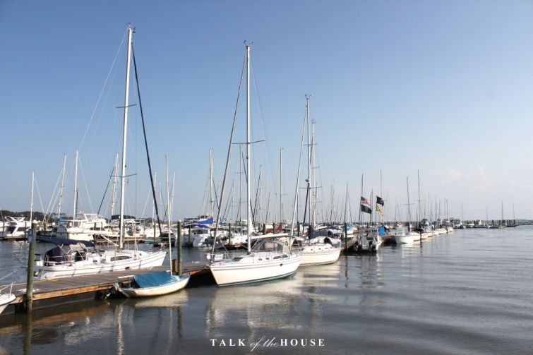

.png)
.PNG)
.PNG)
.PNG)
.PNG)
.PNG)
.JPG)
.JPG)
.PNG)
.PNG)



A couple of weeks ago, while you were reading about pools and outdoor showers¬†here, my husband and I were spending some time on St. Simons Island, a barrier island off the coast of Georgia. ¬†He had a conference to attend, and I tagged along. ¬†I also accompanied him last year and told you about the houses, the villas, Coast Cottages, and sightseeing¬†there. ¬†What I didn’t get an opportunity to tell you about last year was… the food. ¬†(I figured 4 posts on a topic was enough for you. üôǬ†)¬† So dining on St. Simons is to be our main topic of conversation here this year. ¬†I hope you’re hungry!
On the day we arrived, our first stop was lunch at Gnat’s Landing. ¬†The restaurant looks like an old home with a big porch and deck area – perfect for an eating place with a strong beach vibe.
.jpg)
We were seated on the porch with all those ceiling fans spinning to blow away some of the Georgia heat. Even if it is warm out there, I love the fun atmosphere!
.jpg)
My husband and I were both in the mood for salads.  Their salad menu is absolute perfection!  I could eat a salad there for lunch every single day and not grow tired of them.
I had the autumn salad, and my husband had the shrimp salad.
Here is a photo of his (minus a few bites before I remembered to pull out the camera!)
He said it was delicious, and mine was as well. ¬†But salads aren’t all they serve at Gnats Landing.
There are also sandwiches….
and many seafood dishes.
We left Gnats and headed to the conference hotel to check in. ¬†It was in the same complex as last year…not on the ocean üôÅ but at least our room faced the marsh.
My husband went to his first meeting while I unpacked our suitcases, ironed anything that was wrinkled, answered emails, and made reservations for dinner.  When he returned to the room, we drove over to the Red Fern Village to eat at Blackwater Grill.
Blackwater was featured on the Food Network a number of years ago in Diners, Drive-ins and Dives with Guy Fieri.
They are a little more upscale to me than some of the other places on the island. ¬†To begin your meal they bring out flatbread sesame crackers and some of their cream cheese spread….addictive!
I had a vegetable plate, and my husband had their famous shrimp and grits.  The grits are cooked as a fried cake.
After our meal we strolled along the shops there in the village.  Cachettes was one I had not seen before. (Love those green shutters!)
Then we hopped in the car and took a drive along the road to the beach….just so I could get my fill of gorgeous houses. üôÇ ¬†Care to see them? (A couple are repeats from last year..sorry.)
A rerun from last year because it is one of my favorites. üôÇ
Here is the other rerun because it is my other favorite.  Notice the common color scheme?
Aren’t they all just simply beautiful? ¬†Sigh.. ¬†After house viewing, we called it a night and went back to the hotel (no more food that evening. üôÇ )
The next day we went to my favorite restaurant on the island for lunch- Mallery Street Cafe. They are famous for their breakfast dishes, but I wasn’t after those. On our drive to St. Simons from home I had called them to find out which day they would be serving their Chicken Romano…I did not¬†want to miss it! (It is a special served only once a week.) We went specifically for that dish.
And it was very good.  I do think they skimped a little on that lick-your-plate-delicious basil and cheese sauce, but then again, perhaps they had gone overboard with it the last time we were there. (It was swimming in it last year!) Wish I could find a recipe to make it at home.
For dinner that night we went to my husband’s favorite place – Iguanas in the Pier Village.
Go early. ¬†That’s my advice to you. ¬†Last year we went around 6:00 and had to wait for over an hour. ¬†This year we were there at 5:00 and were immediately seated (at the table second from the left on the patio above.) While I could eat a salad every day from Gnats Landing, my husband could eat fried shrimp from Iguanas every single day. ¬†He says it is the very best on the island…and he has been trying it out everywhere on St. Simons for quite a few years! ¬†Here is his plate from that evening.
Darn that looked good!  Shellfish allergy girl here had a hamburger.
You can see their complete menu here. ¬†After you finish your meal, you can help yourself to a serving of soft serve ice cream from their machine in the inside dining room. ¬†(They even throw in free toppings! üôÇ )
To burn off some of those calories that we were quickly accumulating, we walked over to the pier.
We walked around there and took a look at the lighthouse.
Then it was back to the hotel…with a stroll by the pool.
And a little later….
Oh yes…coffee and Italian Cream Cake from Wake Up Coffee. üôÇ
I do believe we have had enough to eat today, so I will save our next meal for another post. üôÇ ¬†But before I go, let me tell you who won the Susan Branch books and Amazon gift card giveaway. ¬†You would like to know, right? ¬†Glory we had a looooooot of comments! ¬†Here was the winning number…

And that number landed on this comment:
Congratulations Vicky!!  If you see this before I contact you, please send me an email with your mailing address.
And just so all of you know, there will be another giveaway coming in August! ¬†So please be sure you check back to find out about it here. üôÇ ¬†Okay?
And that wraps up the first part of our St. Simons trip. I hope you will be here for part 2…more food and some gorgeous houses that we found on a side street. ¬†You have to see them! üôÇ
Until next time…


.PNG)
Where did you stay on St. Simon Island?
Kelly,
You always make the best of your trips! I love the green shutters on that shop as well and the your two favorite homes with the aqua shutters a very nice. Thanks for sharing your trip with us. Take care.
Dawn
Hi Kelly. I’ve got some catching up to do. It’s been a busy few weeks here. Lovely to read about your summer. Food is one of the best reasons for travel, in my opinion! I think I’d feel right at home in St Simons! Off to read part 2….
Love St. Simons especially since I used to live there long long time ago. When my mom, sister and I visited a few months ago we shopped in Cahette”s. I bought two lamps there very reasonably priced. We ate lunch at Blackwater Grill. It was so good. It is such a pretty island and my mom did not want to move when we had to.
I forgot about your shellfish allergy, Kelly. I am sorry! Shrimp and grits are one of my favorite foods in the whole world! The foods, the houses and the restaurants on St. Simon’s all look so, so fun. My friend, Laney, grew up with a beach house on St. Simon’s so I have wanted to go forever. Her stories make it sound so inviting! I must go! Thanks for sharing it with us.
I have my computer in bed with me now and thought I would turn in for the night, but now, for some reason . . . I’m starving!
What a fun trip!
How fun to get to tag along with your husband!! I love eating at local dives/restaurants like this. The food looks delish especially that chicken romano and those crackers with cream cheese spread. üôÇ What a shame to be at the beach and not be able to eat shell fish. I had two crab cake sandwiches last week. üòâ
Kelly,
I loved your post. I lived on SSI for 5 years right near Redfern Village. your pictures bring back memories. I walked that pier many an evening with my children and husband…
loved it..
Glad you enjoyed your visit..
Love, Mona
Kelly,
Oh my, it’s a good thing I don’t live near this resort…I would eat that Chicken Romano and top it off with the cake. So many yummy things to enjoy. The fried shrimp reminds me of a childhood shrimp place near where I grew up. it was called the Green Spot. My dad would stop by for take out sometimes twice a month. Best fried shrimp and fries. It resembled the dish your husband ordered. Makes my mouth water just thinking about it. üôÇ
xo,
Karen
First – congratulations to Vicky! And thanks Kelly for the posts on Susan Branch and Martha’s Vineyard. It was a treat!
And I love this post on St. Simon’s Island!
That Chicken Romano looks out of this world BUT the salads look and sound scrumptious. Would love to visit st. Simons. Thanks for the tour – part one!!!
I have always wanted to visit St Simon’s. Since the hubs is from Savannah, we stop there and never venture further down the coast. The food looked amazing. I am counting the days til we head to Gulf Shores in September. Nothing like the coast for refreshment and rest.
We visit Epworth on St. Simons in the summer for a conference. We like Gnat’s Landing and always stop by the ice cream Shoppe. Also like Mullet Bay…
Kelly, Glad I read this post after eating dinner…I would have had to go looking for some shrimp to fry! Love, love, love shrimp in any form! Was fun to see a little of St Simmons Island…always wanted to go there after reading several books about the South. Those beach houses are so lovely! Thanks for sharing a bit of your getaway with us!
I agree with Marianne in Mo….I so wish I lived in GA or closer to. If I had joined you and your husband I’d have wanted half order of shrimp and half burger….both looked yummy….and then there’s that Italian Cream Cake….all favs!
Congratulations, Vicky.
I so wish we lived closer to Georgia, every time I see pictures I melt with envy! The homes, the atmosphere, THE FOOD! On second thought, I better stay away from the food! üòâ But I agree, I could eat salads from almost any where, I don’t know why they can make them taste better than mine, but they do!
Looking forward to the rest of your trip, more awesome homes to see!
And congrats to Vicky, lucky gal!
That sounds like a wonderful place to visit…and that food…oh my! Think I gained a few pounds just looking! üòâ
Hi Kelly! I just sent you an e-mail, but I wanted to comment here as well! I am so excited to have won this sweet giveaway! It truly made my day….or night! LOL! Thank you so, so much for your kindness and generosity! I did notice I had a typo in my comment…oh dear! Now, on to this post…I have never visited this island, but it looks like a wonderful place. The hubby and I might have to go there someday. The food selections you made look absolutely delicious. I love Italian Cream Cake…yummy! The homes are just beautiful here. Is that sailboat cutouts in the green shutters on the third house? It’s all in the details! Love the aqua blue shutters on the next house too. That’s my favorite color. Thanks again! Have a lovely rest of the week!
Blessings, Vicky
——————————————————————
I’m so glad it made your night Vicky! How fun!
Yes, you will need to make a trip to St. Simons. It feels more like a town than a beach place to me – if that makes sense. Those were indeed sailboat cut outs on the shutters. I loved them too. Great details!
Kelly
I think I just gained 10 pounds. Thanks for taking us along. I also love looking at houses, even if we saw them last year, so keep it up!
———————————————————————–
It was not the place for a diet for sure! (My husband has been on one, but he abandoned it for this trip.) Glad you liked the houses!
Kelly